Conseguiríamos manter o acionamento no app?
Explorar como seria a jornada completa para quem tivesse apólices meutudo e Icatu, sem redirecionar a abertura do pedido.
Product Designer · Experiências B2B e B2C
Conectar necessidades das pessoas, viabilidade técnica e objetivos do negócio.
Atuação do discovery ao handoff e Design QA, em parceria com produto, engenharia, dados, operação e jurídico.
Apresentação pessoal breve. Neste projeto, eu era o único designer da squad. Minha contribuição combinou facilitação, definição da experiência e execução das interfaces.
meutudo · Acionamento de seguro · Perda de renda CLT
O desafio envolvia muito mais que um formulário: orientar o cliente, receber documentos e conectar o app à operação e às seguradoras.
Quem precisava acionar o seguro recorria à Icatu ou à central de atendimento. No momento de pedir ajuda, precisava trocar de ambiente e entender com quem falar.
A meutudo estava se tornando seguradora. As apólices já contratadas com a Icatu continuariam válidas. Como conectar as duas empresas para que o cliente pudesse abrir um único pedido no app?
Passamos a desenhar para a convivência de apólices antigas da Icatu e de apólices da própria meutudo. A tela de certificados mostra o que isso significava para uma pessoa com a mesma cobertura nas duas empresas. O desafio central era decidir que informação passava de uma operação para a outra e quem responderia ao cliente.
Como único designer da squad, conectei as discussões do serviço à experiência em tela.
CSD e Blueprint para tornar dúvidas, dependências e responsabilidades visíveis.
User Flow, protótipos e pesquisa para discutir a solução com evidências.
Handoff, Design QA e leitura dos resultados com os times.
Participaram PM, Tech Lead, analista de dados, head da área, analista da operação e jurídico. As decisões foram colaborativas; meu papel foi direcionar a discussão e defender a coerência da jornada.
Começamos pela matriz de certezas, suposições e dúvidas. Fizemos o levantamento offline e depois revisamos a matriz online para identificar as perguntas que ainda exigiam uma decisão conjunta.
Quem analisa? Quem paga? O que conseguimos integrar? O que precisa acontecer fora do app?
O documento registra a evolução das conversas, incluindo respostas e alternativas discutidas. Não é uma fotografia apenas do início do discovery.
A partir da CSD revisada, pedi ao Gemini que levantasse hipóteses sobre a jornada no app e suas dependências. Levei essas perguntas para a dinâmica de Blueprint.
Explorar como seria a jornada completa para quem tivesse apólices meutudo e Icatu, sem redirecionar a abertura do pedido.
Entender como documentos e informações circulariam — e o que dependeria de um analista se a integração não existisse.
Investigar em quais cenários o cliente precisaria enviar novamente a identificação e o que dependeria do ERP.
Explorar os prazos de retorno e o que aconteceria se as duas seguradoras chegassem a decisões diferentes.
CSD → hipóteses com Gemini → discussão no Blueprint → alinhamento com os responsáveis.
A IA acelerou a preparação e ajudou a chegar à dinâmica com conteúdo para direcionar a conversa. As hipóteses não eram regras confirmadas: facilitei a discussão e validamos as possibilidades com os stakeholders. Não há medição de tempo economizado.
Escolhi o Service Blueprint para ligar cada ação no app ao trabalho necessário nos bastidores. Quando o cliente tocava em “enviar”, quem receberia os documentos, em qual sistema e como chegariam à Icatu?
Explorada para conectar a jornada à Icatu.
A solução precisava acomodar uma etapa operacional.
Receber os documentos e viabilizar o encaminhamento à Icatu.
Na dinâmica, defendi que a pessoa pudesse abrir o pedido e enviar os documentos no mesmo ambiente em que contratou o seguro. Mapeamos o que ela veria e, abaixo de cada etapa, os sistemas, os responsáveis e as trocas entre as empresas. Assim conseguimos discutir a falta da API da Icatu e combinar o encaminhamento pelo analista via ERP. A integração interna com o ERP era uma dependência diferente. Referência do método · Nielsen Norman Group ↗
Durante a dinâmica, explicitamos o que precisava mudar na proposta e quais responsabilidades o serviço teria que respeitar.
O Blueprint conectou decisões de experiência, operação e tecnologia. Foi um realinhamento coletivo do serviço.
Minha contribuição foi facilitar a conversa, trazer perguntas sobre o ecossistema e materializar as consequências na jornada. O alinhamento não se limitou à API: mudou documentos, validação e o tratamento das decisões das seguradoras. A ampliação dos cenários jurídicos aconteceu depois, na revisão da jornada.
Com as dependências do serviço mapeadas, cruzamos os dados de contratação e de acionamento. Priorizamos perda de renda CLT para entregar uma primeira jornada que pudesse servir de base às demais coberturas.
Entregar a primeira jornada e criar uma base para outras coberturas.
A priorização foi feita com PM, Tech Lead, dados, head, operação e jurídico. Não temos os volumes históricos para exibir uma matriz quantitativa; por isso apresento o critério, sem números inventados.
Antes de detalhar os fluxos, comparei como o mercado resolvia o acionamento. O Gemini organizou a leitura. Três referências entraram na jornada: a cobertura, o tempo da análise e o envio como arquivo ou foto.
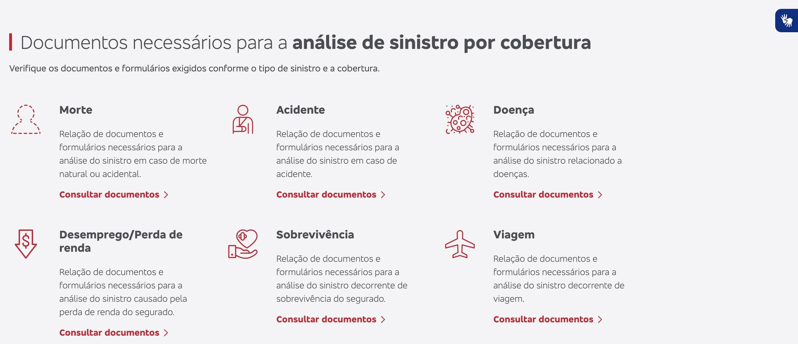
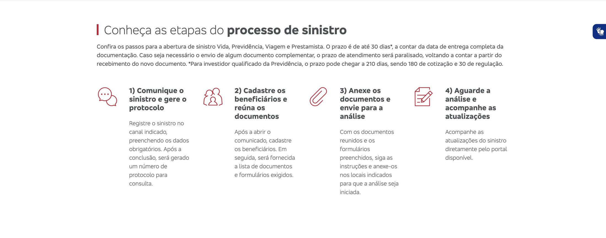
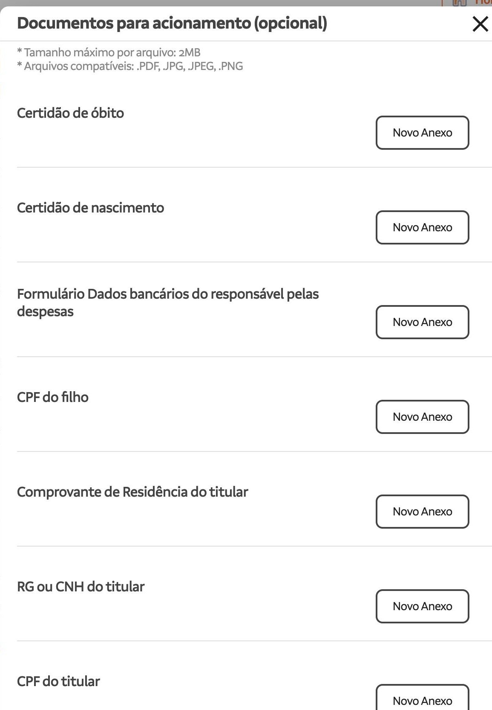
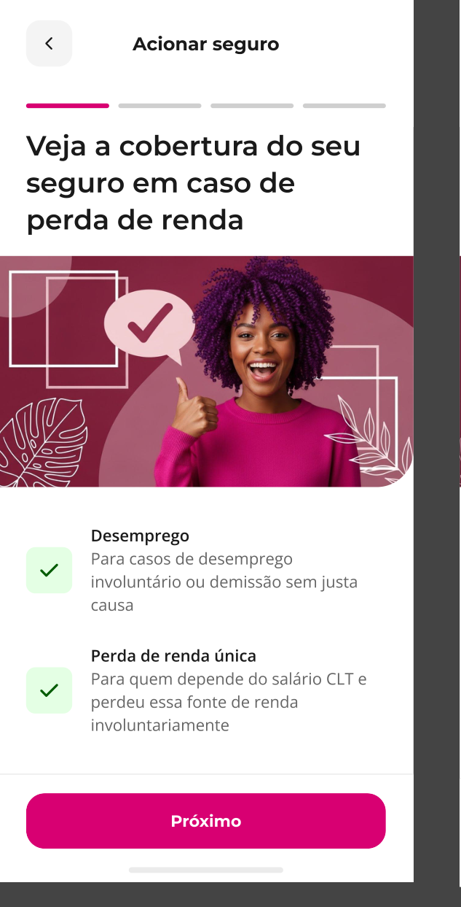
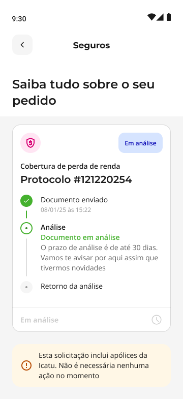
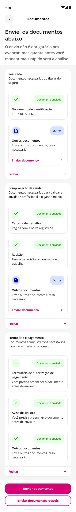
Acelerar a leitura das referências e a exploração de possibilidades para a experiência.
Avaliar as alternativas diante das regras dos seguros, das diferenças entre meutudo e Icatu e dos limites técnicos e operacionais.
O benchmark ampliava as possibilidades; o contexto do serviço orientava a escolha.
O carrossel percorre três referências. No desktop, a Bradesco organiza documentos por cobertura e escreve o prazo de até 30 dias; a SulAmérica aceita o anexo em PDF ou imagem. No celular, a jornada correspondente: o carrossel do que cobre, o acompanhamento com o prazo e a lista de envio. A identidade entra como PDF da CNH digital ou como foto. O Gemini organizou a comparação; o filtro foi meu.
Mapeei no User Flow os caminhos das coberturas existentes, tanto no app quanto fora dele. Percorrer o fluxo com engenharia ajudou a identificar restrições e ajustar o que seria viável na primeira entrega.
Education, documentos, revisão, operação via ERP e status das análises meutudo.
Adiada após a discussão do fluxo com engenharia, pela complexidade técnica.
Na V1, a reanálise após recusa era solicitada pela central. O acompanhamento da análise Icatu dentro do app também ficou para evolução. O fluxo completo inclui cenários além do MVP.
O fluxo de morte por acidente trouxe outra pessoa e outro canal para o desenho: quem acionava o seguro pelo titular precisava de uma jornada web. O Design System do app ainda não tinha componentes para esse contexto em desktop.
Alinhei a necessidade com o time de Design System e criei propostas de componentes para as primeiras versões web. O acionamento externo ficou planejado para a V2.
As imagens mostram uma evolução planejada. Não representam uma jornada web lançada na primeira versão.
Desenhei outras coberturas a partir da estrutura de perda de renda, adaptando orientações, documentos e notificações. A jornada web mostra onde o reaproveitamento encontrou um limite: era preciso propor componentes para desktop. Esse trabalho foi distinto da importação de múltiplos arquivos, para a qual iniciei conversas com o DS.
Na primeira versão, o cliente poderia entender a cobertura, enviar e revisar os documentos e acompanhar a análise meutudo. O ERP apoiaria o encaminhamento à Icatu. Mapeamos as evoluções abaixo e refinamos o recorte depois, com engenharia.
Reanálise no app, jornada externa e formulários com assinatura biométrica.
Reaproveitar documentos para a Icatu, importar vários arquivos, verificar a legibilidade com OCR e permitir excluir um documento durante a abertura para enviar outro no lugar.
API Icatu, acompanhamento no app e análise assistida por IA com intervenção humana.
Múltiplos arquivos: identifiquei a necessidade e iniciei conversas com o time de DS. O componente não foi entregue neste escopo.
Esses são caminhos de evolução, não resultados já implementados. A dependência de DS e engenharia ajudou a tornar o limite do MVP concreto.
Com o fluxo discutido, usei o Figma Make e o Design System para materializar a primeira versão das telas e levá-la às primeiras rodadas de validação com os stakeholders.
Ponto de partida para materializar a experiência.
Exploração visual para o material educativo.
Revisão do conteúdo, composição, estados e adequação à jornada.
O material exibido é o resultado final. A primeira versão do Figma Make não foi preservada; não reconstituímos uma captura como se fosse original.
A proposta inicial concentrava o conteúdo em uma tela. Reorganizei a orientação em um carrossel.
O formulário aparece antes da lista de envio: o cliente pode baixar e preencher com antecedência.
A intenção era evitar acionamentos indevidos e documentação incompleta. Não atribuo uma redução comprovada ao carrossel isoladamente: essa parte não teve uma medição causal específica.
Solicito críticas de usabilidade e acessibilidade, examino as sugestões e ajusto a interface quando fazem sentido.
Exemplo ilustrativo. O pedido digitado ao Gemini pede uma análise de usabilidade e acessibilidade da tela anexada, com nota de 0 a 10 e uma imagem do que revisar. A resposta traz a nota 8,5 de 10, com recomendações de contraste, CTA e um mapa de calor simulado. Não é o registro histórico da execução.
No exemplo anotado, a nota é uma avaliação da ferramenta. O mapa de calor é simulado por IA: não representa eye tracking ou comportamento observado. A análise não comprova conformidade WCAG.
Peço uma análise com nota de 0 a 10 e uma imagem com correções propostas. Uso a resposta como insumo para minha revisão, não como aprovação automática da interface.
Com a primeira versão da jornada em mãos, revisei com o jurídico o que o cliente veria durante a análise. A principal correção foi ampliar os cenários que o app precisava comunicar.
Aprovado, reprovado, falta de documentos e carência.
Garantia básica não cumulativa, sinistro anterior à vigência e ação judicial.
Incorporar os novos cenários e suas mensagens, traduzindo as orientações das áreas especialistas para a experiência.
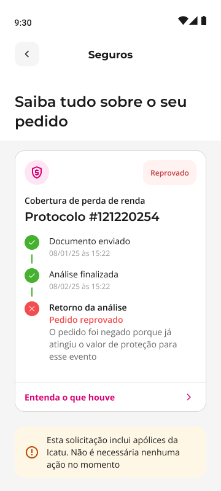
Garantia básica não cumulativa
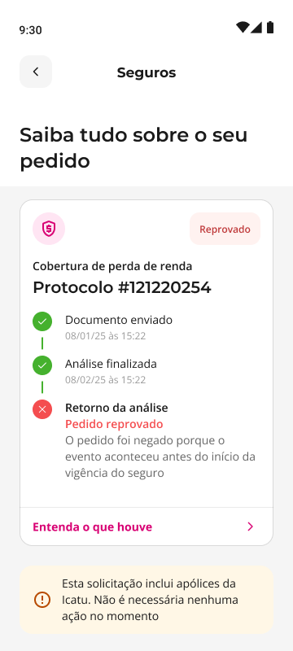
Sinistro anterior à vigência
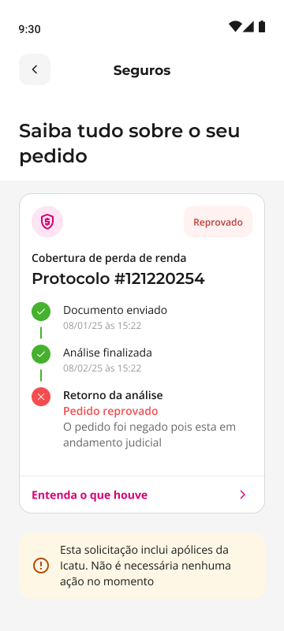
Ação judicial
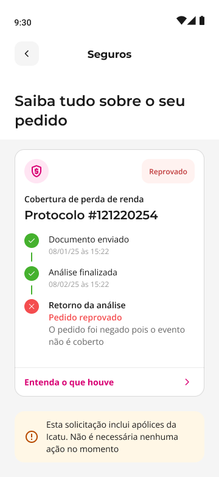
Evento não coberto
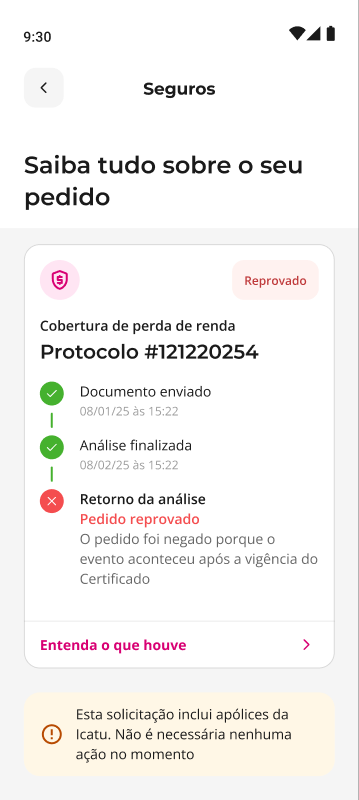
Evento após a vigência
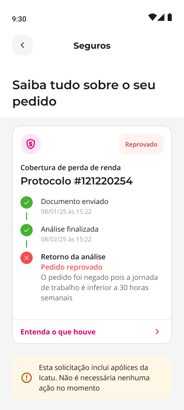
Jornada inferior a 30 horas
Etapa: revisão da jornada com jurídico e alinhamento com Icatu. Esses cenários não foram levantados na dinâmica de Blueprint.
Quando a jornada foi revisada com o jurídico, entendemos que aprovado, reprovado e pendência não cobriam todos os motivos e situações. A partir dessa revisão, ampliei os cenários do acompanhamento da análise. O carrossel percorre as mensagens de garantia básica não cumulativa, sinistro anterior à vigência e ação judicial.
Depois de revisar a primeira versão, levantei quatro hipóteses sobre compreensão e esforço. Pelo prazo de entrega, escolhi o teste não moderado no Maze. Usei o Gemini para transformar essas hipóteses em um roteiro para clientes com seguro renda que nunca o haviam acionado.
Entender se as informações sobre o seguro, suas coberturas e a preparação para o envio estavam claras.
Verificar a compreensão dos nomes dos documentos e da possibilidade de enviar parte deles e completar depois.
Avaliar o entendimento do prazo de análise, dos canais de atualização e da comunicação com a Icatu.
Observar dificuldades nas etapas indicadas e ouvir a percepção dos participantes sobre clareza e facilidade.
Duas etapas indicadas: entender a orientação e enviar documentos. O foco era a compreensão das informações em tela.
O Gemini apoiou a construção do roteiro a partir dessas hipóteses. O teste não avaliava a descoberta espontânea do início do fluxo.
Escolhemos pessoas que ainda não haviam acionado para reduzir a influência de uma experiência anterior. As tarefas eram detalhadas de propósito. A fricção observada exigiu interpretação cuidadosa, porque parte da dificuldade podia estar ligada ao Maze; acompanhamos os indicadores quando a jornada foi para produção.
Com as respostas em mãos, usei a IA do Maze para sintetizar dificuldades de compreensão. Cruzei os sinais das tarefas com os comentários sobre documentos, prazos e próximos passos.
Execução das tarefas e respostas dos participantes.
Ajuda para compreender onde havia dúvidas.
Clareza dos termos, documentos faltantes, complementação e prazos.
O Gemini apoiou o roteiro; a síntese aconteceu no Maze. Não houve um processo de exportação para Gemini que eu possa afirmar. A IA apoiou a interpretação, e as melhorias precisam ser conectadas às respostas reais.
O Maze trouxe sinais de execução e dúvidas concretas sobre documentos e próximos passos.
As respostas abertas ajudaram a explicar o que os percentuais não mostravam.
Houve misclicks e abandono. Parte da dificuldade pareceu relacionada ao uso do Maze, mas isso era uma interpretação a acompanhar em produção, não uma conclusão definitiva sobre toda a fricção. Amostra pequena: sinais direcionais.
Terminologia, pendências e prazos passaram a orientar melhor a próxima ação.
A sigla foi substituída por linguagem mais compreensível. Criamos o cenário para completar documentos depois, mostrando o que faltava, sem depender de a central solicitar. Reforçamos o prazo de análise no encerramento e nos estados relevantes. O prazo de envio de documentos pendentes é diferente do prazo de análise.
Toque nos campos da jornada. As telas mudam com o mesmo fluxo, as mesmas regras e as mesmas interações do protótipo.
Toque na tela para avançar
Só perda de renda segue adiante. A ocupação precisa ser escolhida antes de continuar. No documento de identidade, CNH digital importa um PDF; CNH, RG ou RG e CPF pedem foto. Duas fotos recusadas seguidas abrem a orientação de leitura; na segunda rodada, o atendimento. Documentos obrigatórios incompletos pedem confirmação para enviar ou para sair.
No Figma, documentei fluxos, regras, estados, mensagens, componentes e orientações para implementação.
O que acontece quando o cliente avança, sai ou deixa documentos pendentes.
Referências para preservar a experiência durante a construção.
Registro das divergências com indicação de como deveria funcionar.
O handoff não encerrou minha participação. Acompanhei a implementação com engenharia e abria cards quando encontrava diferenças entre o comportamento esperado e o implementado.
No Design QA, identifiquei ausência dos dados bancários e de documentos em alguns cenários de revisão.
A revisão precisava permitir conferir o que seria enviado.
Registrei a falha, a referência e o comportamento correto para engenharia.
Conferir dados e documentos em diferentes combinações de cenário.
As correções foram feitas com engenharia. Não tenho prints do problema nem dos cards da época, então uso o relato e a referência disponível. Não atribuo uma causa não comprovada à falha. O Blueprint foi realinhamento; aqui há uma divergência concreta encontrada na implementação.
Na entrega desse projeto, usei o handoff no Figma e acompanhei a implementação no Design QA. Hoje eu acrescentaria um protótipo funcional em Cursor, com o contexto do Design System via MCP, para revisar os estados com engenharia.
Fornecer o sistema existente e os estados esperados.
Experimentar interações e combinações de cenário.
Conferir arquitetura, integração, segurança e desempenho.
Esta é uma proposta de como faria hoje, não uma atividade executada neste projeto. O objetivo seria diminuir a distância entre especificação e comportamento, mantendo revisão técnica humana.
Indicadores acompanhados após a implementação, com dados e operação.
De quem iniciou a jornada até a confirmação do envio dos documentos.
Acompanhada com dados e analistas, considerando solicitações de reenvio.
Comparação antes e depois, acompanhada após um mês da implementação.
Fontes: Amplitude e time de dados; analistas e central. Volumes e janelas completas não foram recuperados. Os resultados são da jornada, sem atribuição isolada ao carrossel ou à IA.
85% não representa aprovação do seguro nem pagamento. É a chegada à confirmação do envio. A leitura de 90% foi feita com dados e analistas a partir do reenvio de documentos. A redução de contatos foi acompanhada com a central.
Transformar restrições em decisões claras — para as pessoas e para o time.
Traduzir regras e documentos em orientação e próximos passos.
Dar visibilidade às dependências e construir decisões com os responsáveis.
Usar IA para acelerar o trabalho, mantendo julgamento e validação humana.
Abrir para perguntas sobre decisões, pesquisa, IA, escopo ou resultados. Os mapas completos podem ser ampliados durante a conversa.